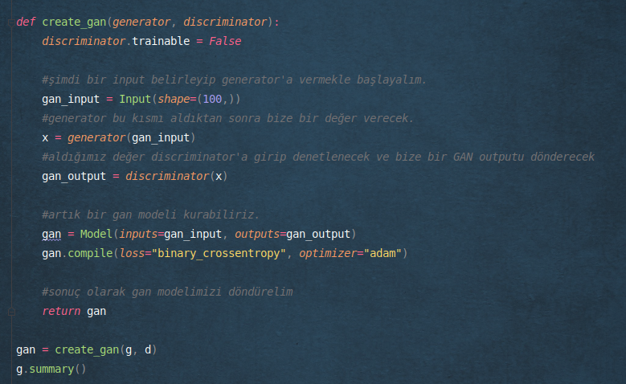

GAN's
Üretken Çekişmeli Ağlar
GAN's bir yapay sinir ağı mimarisidir. Aslında iki ayrı ağ yapısının bir araya gelmesiyle oluşur. GAN'lar kendisine verilen veriseti ile aynı istatistiklere sahip olan yeni veriler oluşturur.
İşte GAN's diye çoğul bir ifade kullanmamızın sebebi bu iki farklı ağdan oluşan yapıdan kaynaklanır.
Nasıl Çalışır?
Bu iki ayrı ağdan birisi gerçek verileri alır ve bir denetleyici yapıya gönderir. İkinci ağ yapısı ise orjinal veriyi temsil etmesi gereken başka bir veri oluşturur ve bu veriyi yine aynı denetleyici yapıya gönderir. Denetleyici ağ veya yapı kısmında ise bu veriler test edilir ve ortaya çıkan verilerin sonucunda taklitçi yapıdan gelen verilerin orjinal veriye ne kadar benzediği ölçülür. Taklitçi ağ yapısı eğer yeterince başarılı olamamışsa ağırlıklarını güncelleyerek yeni bir veri oluşturmaya çalışır. Sonuç olarak taklit eden ağın ağırlıkları belirli bir yerden sonra güncellenmiş olur ve orjinal veriye çok benzeyen veya orjinal veriyi iyi temsil eden bir veriseti oluşturmayı öğrenmiş olur.
Bu durumu bir resimle temsil edersek şöyle görünecektir:

Örnek Bir GAN Yapısı:

GAN's Örnekleri
Yukarıdaki resimde de görüldüğü gibi aslında kuracağımız sistem tek bir ağdan oluşmayacak. Ayırıcı (Discriminator) ve Üretici (Generator) olmak üzere iki farklı yapı kurup bu yapıları senkronize bir şekilde çalıştırarak GAN modelimizi inşa edeceğiz.
Epoch Arttıkça Gelişen GAN Yapısı:

Bütün bu yapının sonucunda nihai amacımız yeni veri üretmektir. Üretilen yeni veri gerçeğine ne kadar benziyorsa ağımız o kadar başırılı olmuş demektir. İyi bir yapıda ürettiğimiz yeni veriler gerçeğinden ayırt edilemeyecek kadar kalitelidir.
Örnek olarak GANs ile üretilmiş aslında gerçekte hiç olmayan insan yüzlerine bakalım:

GAN's Mimarisinin Kodlanması
Çok fazla uzatmadan bütün bu yapının Python ve Keras ile nasıl kodlanabileceğine bir bakalım:
Kütüphanelerin import edilmesi

Verinin Yüklenmesi
Çalışmamızda mnist verisetini kullanağız. MNIST veriseti rakamlardan oluşur ve genellikle rakam ve el yazısı tanımak için kurulan ağlarda örnek olarak kullanılır.

Model Kurma Aşaması
GAN's modeli Generator ve Discriminator olmak üzere iki ağdan oluşur. Bu ağları ayrı ayrı kurup daha sonra genel modelimizi oluşturacağız.Generator ağ oluşturmak için fonksiyonumuzu yazalım.
Fakat burada anlaşılması gereken kısım Generator kısımda output shape önemli iken Discriminator ağın input shape'i önemlidir ve alacağı resimlere uygun olmalıdır. Çünkü bu ağa resimleri direkt olarak vereceğiz, generator gibi kendisi üretmeyecek.
Çalışma mantığını da anlayabilmek adına biraz daha açalım.
Discriminator ağ hem gerçek resimleri hem de Generator ağdan gelen resimleri alır. Tıpkı bir dedektif gibi hangi resmin sahte hangisinin gerçek olduğunu ayırt etmeye çalışır.
Generator ağ orjinal resmi taklit etmeye çalıştığı için output shape'i orjinal resmin boyutundadır. Orjinal resimle aynı boyutta olmasından dolayı üretilen bu resmi Discriminator ağ direk olarak alabilir. Çünkü bu ağın da giriş boyutu orjinal resimle aynıdır.
Son adımda iki resmi de alan Discriminator ağımız hangi resmin gerçek hangisinin sahte olduğunu ayırt etmeyi öğrenirken, hataları ile kendini güncelleyen Generator ağ ise orjinal resimlere gittikçe daha çok benzeyen resimler oluşturmayı öğrenecektir.
Generator Ağ Oluşturulması
Generator ağ oluşturmak için fonksiyonumuzu yazalım:

Discriminator Ağ Oluşturulması
Aşağıda görüleceği gibi discriminator ağımız sigmoid fonksiyonlu 1 tane çıkış hücresine ve binary loss fonksiyonuna sahip.
Peki neden böyle? Çünkü bize 0 veya 1 şeklinde bir değer döndürecek. Bunun anlamı şudur; resim gerçek veya sahte. Yani ikili bir sınıflandırma işlemi yaptığımız için ağın çıkış boyutu ve loss fonksiyonu da buna uygun olmak zorunda.

Modelin Oluşturulması ve Eğitilmesi
Generator ve Discriminator ağlarımızı oluşturduktan sonra artık tek bir yapıda birleştirip GAN modelimizi oluşturabiliriz. Başlamadan önce bilmeliyiz ki, generator kısmının, yani ağımızın üretici olan kısmının, kendisini güncelleyebilmesi için discriminator kısmını geliştirmek istemiyoruz. Çünkü eğer fake/real ayrımını yapacak olan discriminator kısmını da eğitirsek ağın bu kısmı da kendini geliştireceği için, oluşturulan sahte veri ne kadar gerçekçi olursa olsun bu verinin sahte olduğunu anlayacak ve generator kısmı hep başarısız olacaktır. Dolayısıyla üretici ağ her çıktısını başarısız görecek ve kendini geliştirmekte zorlanacaktır. Oysa ki gerçeğe yaklaştığında başarılı olduğunu bilmesi ve kendini buna göre güncellemesi gerekiyor. Bu sebeplerden dolayı discriminator ağımız eğitime kapalı olacak.

Eğitim ve Sonuç
GAN Modelinin Eğitilmesi

GAN Sonuçlarının Görselleştirilmesi
Bütün kodlara ulaşmak isterseniz aşağıdaki linkten ulaşabilirsiniz:
Sadece 50 epoch yaptığımız için çok iyi bir sonuç çıkmasını beklemek mantıksız olur. Epoch sayısı arttıkça çok daha iyi sonuçlar alabiliriz.